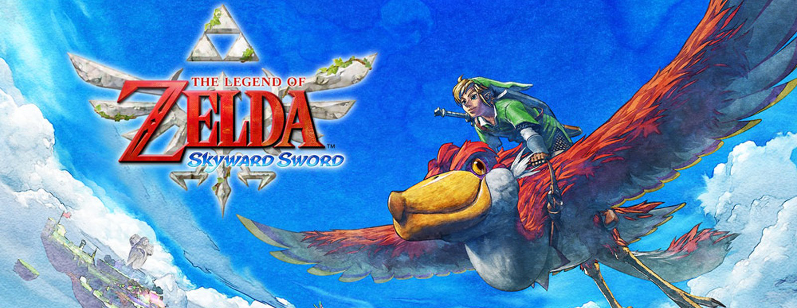
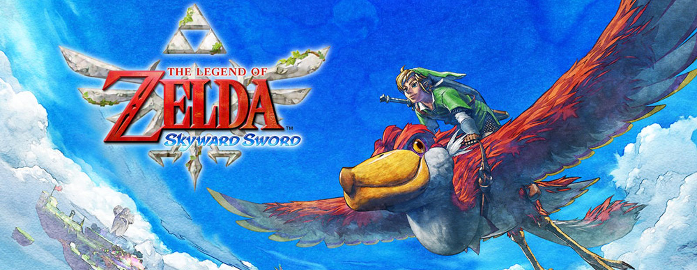
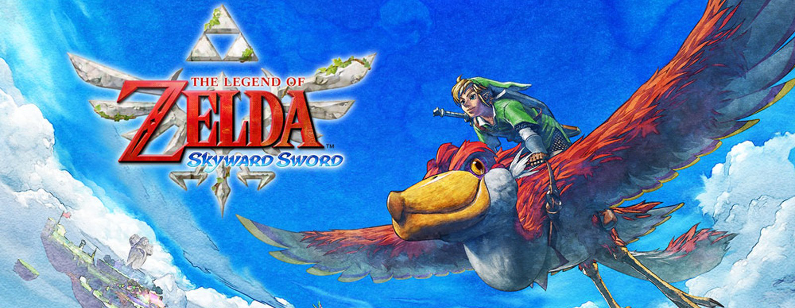
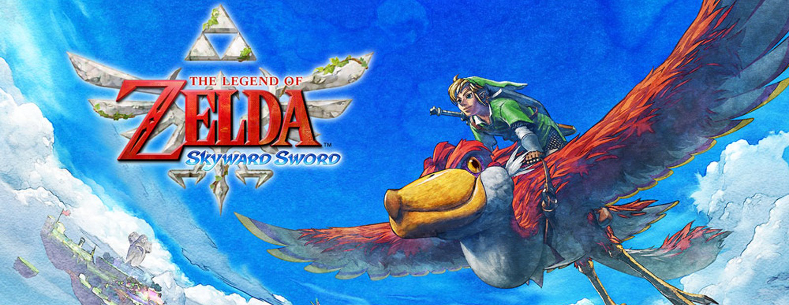

 

Welcome to The Legend of Zelda Informative Deep Dive. We are here to give some insight into The Legend of Zelda franchise and how they have continued to evolve over the years. By proxy, we hope this presentation will show how Nintendo has too adapted as a company and continues to innovate their games' formula in ways few other developers have.
When selecting key components to represent innovation, we decided that there needed to be an address to the limitations Nintendo had to combat in order to push forward. Hardware limitations address these problems as Nintendo would have to make games that utilize their available technology to the best of its ability while still able to captivate audiences worldwide.

From simple items like health potions to complicated powers like gravity controlled objects for puzzle solving; The Legend of Zelda has come a long way in terms of game mechanics. Nintendo has found a way to keep players entertained by using their consoles features to their advantage; Like Nintendo, Zelda has not been afraid to innovate upon the formula while also not straying too far from the core mechanics players have come to love. With each game the franchise truly feels like an innovation over the prior and continues to captive thier audience.

Alongside hardware limitations there was the matter of software and how game engines enabled Nintendo to experiment with the visual design of its world. While Zelda holds consistent themes within its design, The Legend of Zelda is also known for having very different visual styles and narratives connecting the overarching universe. We hope to highlight some of these core visual style transformations of the franchise and highlight what benefits they have brought.


The Legend of Zelda was released on February 21, 1986. The game
was released on the Nintendo Entertainment System.
The game follows the quest of our character, Link as he travels the
lands of Hyrule to save the kingdom, alongside Princess Zelda, from
the evil clutches of Ganon and his army of darkness. Link is tasked
with finding eight fragments of The Triforce of Wisdom, which were
scattered in eight dungeons by Zelda before her capture. Upon
conquering the eight dungeons, Link uses the Triforce of Wisdom,
alongside a silver arrow, to defeat Ganon and save the kingdom.
We chose this game as it being the first game of the
franchise meant that it would lay the groundwork for all
games to come after. The original Zelda established many of
the elements of subsequent games, including dungeons, puzzle
solving, item gathering and returning characters.
It also displays the impressive innovation of Nintendo
as they had to work around the NES visual limitations.

The Legend of Zelda: Ocarina of Time was released on November 21, 1998.
The game was released on the Nintendo 64.
In this game, a reincarnation of Link is raised by an ancient tree
known as The Great Deku Tree. This elder tree is cursed by a reincarnated
Ganon (Ganondorf) a man vying for power in the lands of Hyrule. Link
defeats the curse of the tree but is unable to save it from dying.
Before passing, the tree tells Link the story of Ganondorf and the
Triforce; Link is instructed to find Princess Zelda. Link meets with
Zelda and is told about a dream of spiritual stones. After going
on a quest to retrieve the stones, Link returns to Hyrule Castle
only to find it overthrown by Ganondorf. Link, armed with The Ocarina
of Time, (a magical object given to Link by Zelda when she fled the
castle.) travels to the Temple of Time and retrieves the Master Sword.
He falls asleep for seven years, awakening to the dark future made by
Ganondorf. Link is met by a sage of light who instructs him to awaken
five other sages to become the hero of time. After acquiring a medallion
(forged by the six sages) he is met by Sheik, a mysterious warrior
who reveals herself to be Zelda. Link is gifted light by Zelda but is
captured by an empowered Ganondorf. Link races to Ganondorf’s castle
and wins a duel that results in the castle collapsing. Link, alongside
the seven sages, confront a transformed Ganondorf simply called Ganon.
After defeating him, Link is sent back in time to when he was a child.
We chose this game because it was a technological marvel for Nintendo
as it was The Legend of Zelda’s first entry into 3D. It introduced many
of the mechanics new 3D Zelda games use, and set up many of the factions/essential
characters who would play an important role going forward. Most notably, this
game is responsible for the multiple timelines that exist in the Zelda universe
and the stories of the other game’s narratives.
The Legend of Zelda: Skyward Sword was released on November 18
to November 24 2011 depending on the region. The game was released on the Wii.
In this game, the original Link (for the time being) lives upon the Skyloft,
a floating island of the last humans. The village is reliant upon large
birds known as Loftwings and praise a goddess who has protected them
from the surface below. Link participates in a race to win a prize
from Zelda, the village headmaster's daughter. After winning the race,
Link is given the sailcloth by Zelda. After riding off on their
loftwings, a tornado from the surface knocks Zelda away. Link jumps
after her, but he is grabbed by a mysterious woman who is later
revealed to be Fi. Link is gifted the goddess sword and an emerald
tablet. This tablet opens a hole in the sky revealing the land below;
together, Link and Fi travel to the surface in order to find Zelda.
Upon the surface, Link explores Skyview Temple and encounters a demon
called Ghirahim who rules over the surface. Ghiraham tests Link’s
abilities before leaving to pursue Zelda. Link spends a majority of
the game uncovering the truth behind the world and why they lived in
the clouds. Eventually, Link makes it to the earth temple. Link
reunites with Zelda who is accompanied by Impa (another recurring
character in the franchise who is Zelda’s guardian) Link completes the
Triforce and defeats Demise (a primordial evil who reincarnates as Ganon).
Upon his victory, Link frees Zelda (the mortal incarnation of the goddess
Hylia) from having to imprison Demise for centuries. Ghiraham then reappears,
grabbing Zelda and relaying his plans to revive Demise through the Gate of Time.
We chose this game because it embodied a new generation of consoles and
game design for Nintendo. It was the first Zelda game to implement motion
controls (a mechanic involving physical movement of the controller to
impact in game actions) albeit the controls have not aged well. However,
it did mark a new point in Nintendo’s desire to innovate the formula by
more directly involving the player. This in turn strengthens the LINK
between the player and character. The game also plays a significant role
in the universes' story as Skyward Sword is the first chronological game
of the franchise, and explains much of the lore behind the game’s story.
The Legend of Zelda: Breath of the Wild was released on March
3, 2017. The game was released on the Wii U and the Nintendo Switch simultaneously.
In this game, another reincarnation of Link awakens inside the temple of resurrection
and is led to the surface by a mysterious voice. Link exits the temple to discover a
ruined Hyrule. Link encounters an old man who gifts link a paraglider in exchange for
four orbs Link must recover. After obtaining the orbs, Link is instructed to meet the
old man in the Temple of Time. The old man reveals himself as the deceased king of
Hyrule and tells Link of the tragedy that occurred. They explain 100 years prior a great
evil known as calamity ganon had been sealed inside Hyrule Castle due to it being
unbeatable. Link then travels to a sheikah village led by a wise, elderly Impa. Link
is told about the Guardians and Divine Beats, ancient machines built long ago and
used by a previous hero and princess to stop Calamity Ganon. Link is tasked to
investigate the divine beasts (now controlled by Ganon) and discover the fates of
the four champions who had controlled them. (each an essential character in the
games plot) Link reclaims control over the divine beats and sets free the souls
of the former champions trapped by the machines. After traveling to the lost
woods and recovering the master sword, Link returns to Hyrule castle to combat
Ganon. Using a combination of the master sword, alongside the divine beasts power
and Zelda’s bow of light; Link defeats Ganon and Zelda is able to seal Ganon away.
The lost spirits trapped by Ganon are set free and the world is at peace.
We chose this game because it set a new era for Zelda, where all timelines
converged to a singularity. The reset created a fresh slate for Nintendo to
work with which allowed for a very different kind of Zelda. This game added a
lot of new mechanics for the Zelda franchise (many utilized motion controls as
well but in a far less frustrating manner) It was also the flagship game for the
Nintendo Switch, the newest line of consoles.